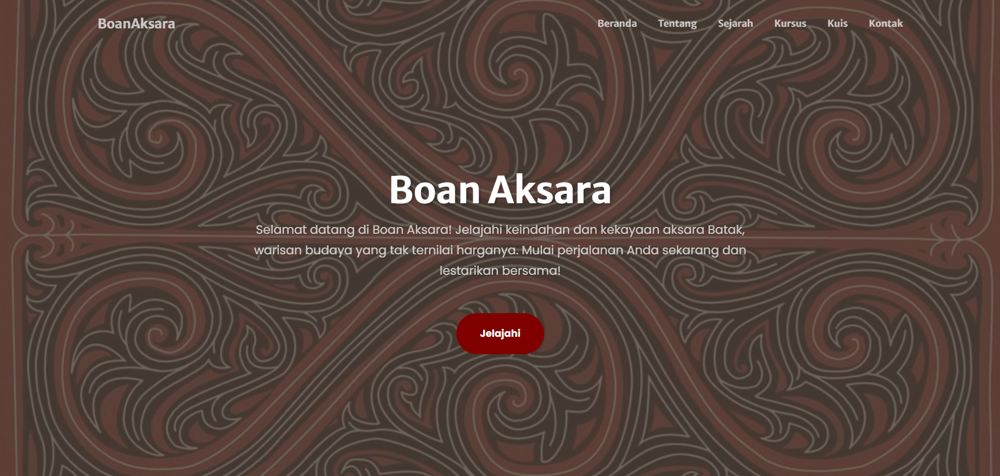
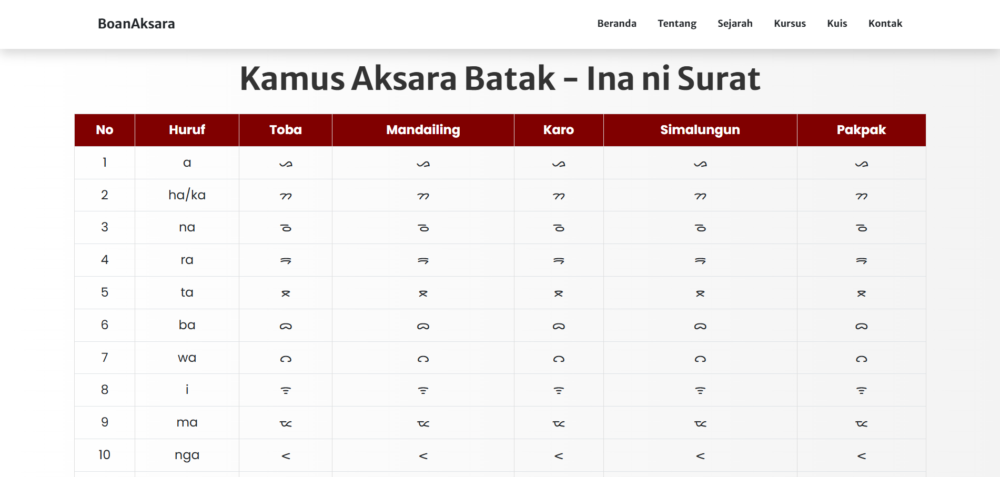
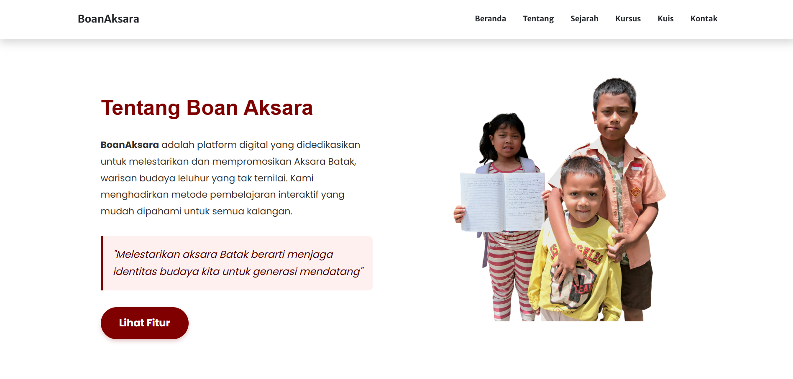
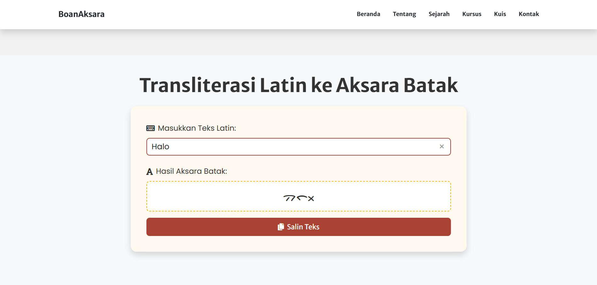
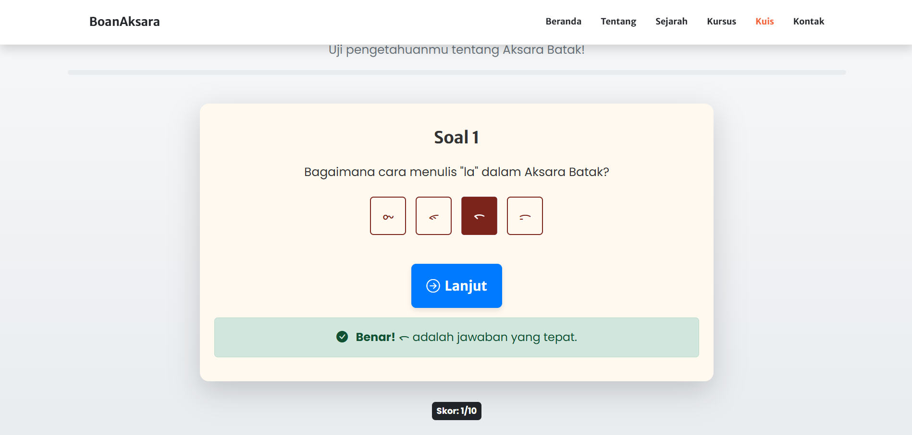

An interactive website for preserving and teaching Aksara Batak — the traditional script of the Batak people of North Sumatra. Making cultural heritage accessible, one character at a time.
Website interaktif untuk melestarikan dan mengajarkan Aksara Batak — tulisan tradisional masyarakat Batak di Sumatera Utara. Menjadikan warisan budaya mudah diakses, satu karakter dalam satu waktu.
OverviewGambaran Umum
BoanAksara (from the Batak word boan — "to carry") is an interactive educational website dedicated to teaching Aksara Batak, the traditional writing system used by the Batak ethnic groups of North Sumatra. The script is one of Indonesia's indigenous scripts with roots going back centuries, yet it's largely unknown even to younger Batak generations.
BoanAksara (dari kata Batak boan — "membawa") adalah website edukasi interaktif yang didedikasikan untuk mengajarkan Aksara Batak, sistem tulisan tradisional yang digunakan oleh suku-suku Batak di Sumatera Utara. Aksara ini adalah salah satu aksara asli Indonesia dengan akar yang membentang berabad-abad, namun sebagian besar tidak dikenal bahkan oleh generasi Batak yang lebih muda.
The site covers the fundamentals of Aksara Batak — the base characters (ina ni surat), diacritics (anak ni surat), and punctuation — through an interactive, self-paced learning experience. Users can explore characters, see their phonetic equivalents, and practice recognizing them.
Situs ini mencakup dasar-dasar Aksara Batak — karakter dasar (ina ni surat), diakritik (anak ni surat), dan tanda baca — melalui pengalaman belajar interaktif yang bisa dilakukan mandiri. Pengguna dapat menjelajahi karakter, melihat padanan fonetiknya, dan berlatih mengenalinya.
Built entirely with vanilla HTML, CSS, and JavaScript with no frameworks, BoanAksara was submitted to a national competition focused on digital preservation of Batak culture — where it reached the Top 30 out of hundreds of entries from across Indonesia.
Dibangun sepenuhnya dengan HTML, CSS, dan JavaScript vanilla tanpa framework, BoanAksara diikutsertakan dalam kompetisi nasional yang berfokus pada pelestarian digital budaya Batak — di mana ia berhasil meraih Top 30 dari ratusan peserta dari seluruh Indonesia.
The ScriptAksaranya
Problem & SolutionMasalah & Solusi
FeaturesFitur
GalleryGaleri




